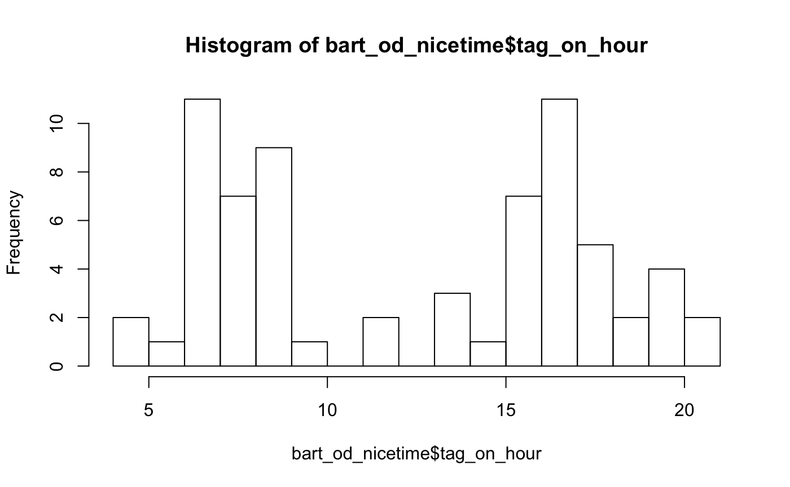
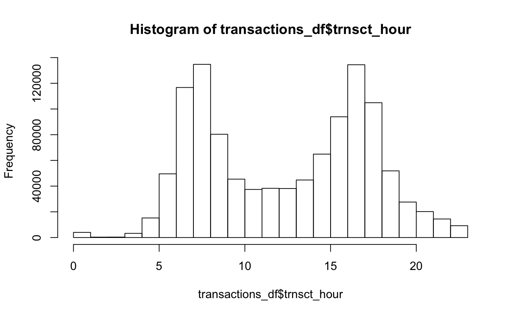

clpr-tutorial.RmdSample a day of transactions by user
Note that date must be formatted as below for now. YYYY-MM-DD
Note that we source a local R script that defines the database connection details.
library(DBI)
library(dbplyr)
library(dplyr)
library(clpr)
source("~/.keys/rs.R")
rs <- connect_rs()First, let’s pull a sample of transactions in a given day using sample_day_of_transactions.
date <- "2016-04-25"
transactions_df <- sample_day_of_transactions(rs,date,n_users=100)Use the as_rides function to change the unit of observation from transactions to rides, where a ride is a ride on an operator.
rides_df <- as_rides(transactions_df)We can also create a dataframe summarizing transfers within a given time window (in minutes), using the create_transfer_df function.
transfer_df <- create_transfer_df(rides_df, 120) #120 minutes
head(transfer_df)
#> # A tibble: 6 x 7
#> # Groups: participantname.transfer [3]
#> participantname.transfer participantname from_operator_id to_operator_id
#> <chr> <chr> <int> <int>
#> 1 AC Transit AC Transit 1 1
#> 2 AC Transit BART 1 4
#> 3 BART BART 4 4
#> 4 BART Napa Solano 4 9
#> 5 BART SF Muni 4 18
#> 6 East Bay SF Muni 8 18
#> # ... with 3 more variables: num_transfers <dbl>, num_discounted <int>,
#> # transfer_revenue <dbl>Alternatively, we can use the as_bart_journeys function to change the unit of observation from transactions to rides on BART only, with additional information about the rides that individuals may have taken before or after boarding BART. For example, taking a ferry and then BART.
bart_od <- as_bart_journeys(transactions_df)The outcome includes the time of the previous transaction to BART tag-on. For example, a user tagged off of the ferry at 7:05 and then onto BART at 7:20. Or, a user tagged onto an SF Muni bus at 7:00 and then onto BART at 7:30. It also includes the time they tagged onto the following ride.
We can use the convenience function spread_time_column to spread the timestamp column into day of year, month, hour, and minute integers.
out_time_df <- spread_time_column(bart_od$transaction_time, prefix="tag_out_")
in_time_df <- spread_time_column(bart_od$time_of_previous, prefix="tag_on_")
bart_od_nicetime <- cbind(bart_od,in_time_df,out_time_df)This can make working with the time data easier. For example, plotting a histogram of the tag on hour.
hist(bart_od_nicetime$tag_on_hour, breaks=24)
We can also pull a full day of transactions using day_of_transactions.
rs <- connect_rs()
date <- "2016-04-25"
transactions_tbl <- day_of_transactions(rs,date)
transactions_df <- as_tibble(transactions_tbl)
time_df <- spread_time_column(transactions_df$transaction_time, prefix="trnsct_")
transactions_df <- cbind(transactions_df,time_df)hist(transactions_df$trnsct_hour, breaks=24)
Then we can calculate the average number of transactions per product type in the day:
rides_df <- as_rides(transactions_tbl)
rides_df <- get_product_description(rides_df)
rides_per_user <- rides_df %>%
group_by(cardid_anony,product_description) %>%
transmute(total_rides=n())
rides_per_type <- rides_per_user %>%
group_by(product_description) %>%
summarise(mean_rides=mean(total_rides))
knitr::kable(head(arrange(rides_per_type,desc(mean_rides))))| product_description | mean_rides |
|---|---|
| FAST Route 90 Senior 31-day Rolling Pass | 7.727273 |
| Santa Rosa CityBus S/D 31-day rolling pass | 6.375000 |
| FAST Route 90 Youth 31-day Rolling Pass | 6.000000 |
| WestCAT Senior 31-Day Pass | 6.000000 |
| SF Muni 3 Day Rolling Pass | 5.597938 |
| East Bay Regional Adult Local 31-Day Pass | 5.100457 |
You can contribute code, data, or questions. Please feel free to open an issue with any questions about how to use the package.